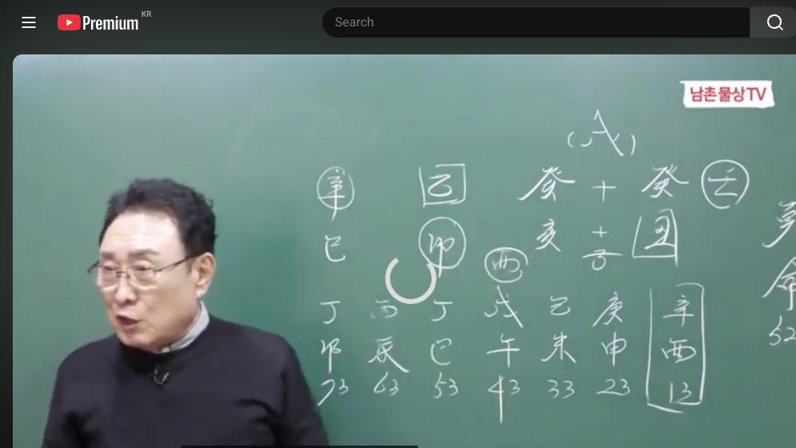

남촌물상TV 전체 문서 › 동영상 V0100
음악인으로 먹고 살려면 이걸 미리 알아야 한다

| 문서 번호 | V0100 (동영상) |
|---|---|
| 영상 URL | https://www.youtube.com/watch?v=fyDqBbf7yRU |
| 영상 ID | fyDqBbf7yRU |
| 게시일 | 2024-11-04 |
| 길이 | 29:50 (1790초) |
| 조회수 | 915회 (수집 시점 기준) |
| 카테고리 | Howto & Style |
| 자막 | ko (자동생성) |
| 수집 시각 | 2026-08-30 17:03 (KST) |
영상 설명 (YouTube 설명 원문 그대로)
음악인으로 먹고 살려면 이걸 미리 알아야 한다 #사주풀이 #사주팔자 #음악인
전체 자막 (663구간 · 타임스탬프 클릭 시 해당 장면으로 이동)
[0:00]새로운 태양을 가려면 신신 있어야
[0:02]되겠죠 그러니까 간단 이거 유럽이야
[0:04]말할 것도 없어 그리고 소리 나는
[0:06]걸로 사유 금서 유럽이 수밖에
[0:07]됐겠어요
[0:10]근데 이제 우리가 제가 지금 이거
[0:12]하는 그 유튜브를 하잖아요 하는데 제
[0:16]호가 남촌이 특허가 돼 있잖아요 근데
[0:19]어떤 사람들이 남촌이 내 이름을 바
[0:21]도용했습니다 아 그래서 이제 그런
[0:24]관계는 가한 우리 그 그 유튜브 하신
[0:28]분들도 어 그걸 아시고 절대 남초이
[0:32]용어를 쓰시면 안 된다는 걸 한번 꼭
[0:34]말씀을 드리고 싶어서 사전에 제가
[0:36]말씀을 드립니다 그래
[0:39]지금까지이 저하고 관계가 이제 남촌이
[0:42]이름은 단지 역학에서는 저만 쓰게 돼
[0:45]있어요 그래서 그 특허를지가 공상으로
[0:47]돼 있기 때문에 일반인들이 사용하시면
[0:50]그 안 됩니다 어 그래서 특 유튜브
[0:52]하신 분들은 같이 동일하게 남이랑
[0:55]우리 나를 이용하면 안 되는 거지 그
[0:58]김대이 하나거든요 계속 그 사람 뭐
[1:00]분신이 있는지 모르겠지만 그건 안
[1:02]되니까 참고하셨으면 되겠습니다 자
[1:05]오늘 이제이 밴드에 올린 사주를
[1:07]상적으로 해석을 그 한번 해보라 그
[1:09]말이에요 근데 우리가 이제 심법을
[1:11]여러분들이 굉장히 요구를 하고 있는데
[1:13]안심이라는 것은 그 상적인 것을
[1:16]알아야만 안식이 되는 거예요 자 그럼
[1:19]어떤 거냐 그러면 가령 나무다 그럼
[1:23]나무가 그 꽃을 높히고 있을 때 또는
[1:27]꽃을 높 에이 먹었냐 못지 그럼
[1:31]거기에 그 에로이 뭐냐 이제 이런
[1:33]것을
[1:35]상상해서 추월해 가지고 거기서 이제
[1:38]신법이 자꾸 생기는 거거든요 그래서
[1:41]여러분들이이 심법은 기초 이론에서
[1:44]안전히 득이 돼야 돼요 제가
[1:46]그렇잖아요 기초는 자꾸 하셔야 한다고
[1:49]그래서 그것이 완전히 내 것으로
[1:51]만들어야 돼요 자 그러면 여기에 이제
[1:53]밴드에 올린 사주로 제가 상적으로 그
[1:56]이거 참 쉬운 사주에 여러분들이 그
[1:59]풀기 어려운 사주 가 아닙니다 자
[2:02]계축
[2:03]개해 을묘 신사 어 50 50 남사
[2:08]사주에 근데 이제 이런 걸 보면 이제
[2:11]자기가 주체성이 을목 아닙니까 자
[2:15]을목이 어떤 형태로 우리가 이것을
[2:18]물상으로 봐야 되느냐 이게 이제
[2:21]굉장히 중요한 거란 말이에요 그러면
[2:23]자 작은 나무로 볼 것이냐 또 그
[2:26]여러분들 쓸 때 작은 을목이 나무 막
[2:28]써요 근데 생각을 안 해 그것이 문제
[2:32]그다음에 뿌리가 있을 때와 없을 때
[2:36]차이점 뿌리가 없다면 둥둥 오리같이
[2:39]떠기 아아 그래서 이거 오리라고 할
[2:42]수도 있고 뭐 그 정착이 안 된다
[2:44]뭐이 여러분들 그 응용 하시잖아요
[2:47]그런 것이 되는데이 뿌리가 안전히
[2:50]묘목에을 묘수 뿌리가 존재 있고 그
[2:53]말이에요 그다음에 천간에서 토는
[2:56]없어도 뿌리에 축토가 있어요 그래서
[3:00]이걸 제가 표현할 때 연꽃으로
[3:02]표현했던 겁니다 자 연꽃은 맑은 물에
[3:06]안 살죠 흙탕물에 뿌리를 내리고 살기
[3:08]때문에 축토는 무슨
[3:10]토 흙탕물 우리가 책에 봤을 때 제가
[3:13]뭐라 썼어요 뻘흙이 썼단 말이에요
[3:17]그래서 제 이것을 제가 축토 용어를
[3:21]썼기 때문에 버리기란 용어에서 을목을
[3:24]연꽃으로 봤다 이렇게 해서 이제
[3:27]물상인 해석을 해서 물상 목고 설명을
[3:29]드린 겁니다 이게 이제
[3:33]안심법문 본인이 항시 무리에 떠 있는
[3:36]것보다는 너는 어 참게 땅에 나무좀
[3:40]뿌리 하면 내 얼마나 좋을까 떠든
[3:42]기보다 그런데 여기에
[3:45]계수에 결과 두 개 계수가 있어요 자
[3:49]계수는 우리가 우리 흐를 때 소리가
[3:51]나나
[3:53]나지요시는 물이니까 쫄쫄 흘러 소리
[3:56]나잖아요 소리 나는 계수라고 그래서
[3:58]계수 일가들이 말 차례 그니까 있는
[4:01]이유가 있지 그냥 한 거 아니에요
[4:03]임수는 어쩐다 자 임수는 한강물이
[4:06]흐르는데 여러분들이 소리 나는 거
[4:07]봤어요 안나요 그래서 임수는
[4:11]절대적으로 깊은 물은 소리가 나지
[4:14]않는다 자기 속내를 제일 안 들어낸다
[4:17]자 물이 흘러가는데 그 속에 뭐가
[4:19]있는 거 여러분 보여 안 보여 안
[4:21]보이잖아요 그래서 너른이 흘러 봐야
[4:24]속내를 안 내고 있잖아 이게 심법이
[4:27]그니까요 그것을 이용한게 물상 론이
[4:30]그래서 진짜 물로는 이런게 물인지 그
[4:34]뭐 고전 써가면서 그냥 뭐 무엇이
[4:36]계절이 쪽 해서 그 물상 불상 우리는
[4:39]무것도 안 쓰잖아요 용신이여 쓰 아예
[4:41]쓰지 않잖아요 순수하게 자연을 가지고
[4:44]해석한 한분은 대한민국에서 저만 하고
[4:47]있다 자 그러면 지금 이제 그럼이
[4:50]개란 그생각을 무슨 생각을 하고 있냐
[4:52]그 말이야 넌 언젠가 여기에 토라
[4:55]것을 땅을 좀 불러다 줬으면 하는
[4:58]마음을 가지고 있을 거라 그 말이야
[4:59]그 토의 그림 있었다 그러면 자
[5:01]무토의 땅은 작은 땅이 큰 땅이야
[5:03]큰땅 자 큰 땅인데 언젠가는 큰 땅을
[5:06]그려 한다는 얘기는 본인이 생각하고
[5:08]있을 거 아니에요 근데 여기에 천간에
[5:11]뜨는 태양이 없어요 없으니까 해 트는
[5:15]새로운 자 제 3의 나라 제 2의
[5:18]나라 결과적으로 지구 반대편의 나라에
[5:21]갔을 때 태양이 뜨는 걸 생각해서는
[5:23]그 그림을 항시 갖고 사는
[5:25]사람이다라고 표현해도 물상 해석은
[5:28]이게 안식이라 그 말이야 그럼이 사람
[5:30]속 마음을 다 읽어내는 거지 지금
[5:32]이렇게 자 그렇게 되면은 끌어온 자는
[5:35]다 있어요 태양을 끌어온 자는 여기
[5:37]있고 그다음에 지지에도 뭐 보시면
[5:40]사화가
[5:41]있어요 그래서 이제 근본적인 핵심을
[5:45]놓고 이제 설명을 하는데 그럼 이제
[5:48]연구실 디가 그 어떤 형태를 취하고
[5:50]있냐 그 말이에요 어떤 형태를 취하고
[5:52]있냐 또 그 마음을 읽어보자 그
[5:53]말이야 마음을 심법으로 그럼 자
[5:57]목이란이이 연꽃이 연 꽃이 물위에 떠
[6:01]있을 때 자 그러면 자기가 물위에 떠
[6:04]있다 그럼 자
[6:07]아름이이 우리가 자연의 식물이라 것은
[6:10]왜 제가 저 좋아하냐
[6:12]그러면 누구를 보여주기 위해서 꼽힌
[6:15]건 아니에요 근데 이제 여기 해석할
[6:18]때는 내가 꽃을 피어서 이제 이렇게
[6:22]꽃의 입장이 아니라 사람의 입장으로
[6:24]대입하기 때문에 인간이 내가이 연꽃이
[6:29]인간이라면 는 많은 사람들한테
[6:31]아름다울 보여주고 싶다 이게 심법이
[6:34]그요 그래서 여러분들이 안심 안심
[6:38]하는데 기초에서 달달달 이거 응용이
[6:40]되지 않으면 절대 안법 안 생기는
[6:43]거예요 자 그다음에 자 그러면 지재
[6:46]이제 행동은 어떤 것이
[6:48]행동 행동은 어떤 것이냐 그봐 행동
[6:51]자 청가는 목표예요 청가는 이미
[6:53]목표요 큰 땅 여기는 뭐예요 병
[6:57]금에서한테
[6:59]그죠 이미 정해져 있어요 천간의
[7:02]목표라 건 너는 너는이 영권 너는 자
[7:06]저기 넓은 땅에 한번 사람이라
[7:08]사람이라 가정하라 그 말이야 연꽃을
[7:10]우리가 연으로 표현했지만 삶의 과정은
[7:13]연꽃으로 하지만 내가 인간으로서
[7:16]연꽃으로 생각해 봐라 그러면 나는 저
[7:20]저기 무토가 큰 땅에 가고 싶었다
[7:22]목표가 그다음에 우게 태양이 없어서
[7:26]태양을 내가 새로운 태양으로 가고
[7:27]싶다 이게 핵심 아니에요 그러면 자
[7:30]자기 원국의 태양이 여기 태양이 안
[7:32]뜬 거 아니에요 그러면 자 우리가
[7:33]애국에 갔을 때 태양이 뜬다 이거
[7:35]우리 물상 해석하고 있잖아요 자 이런
[7:38]과정을 우리는
[7:47]안심법문 뭐 기초 뭐 맨날 교수님
[7:50]기초 하라 그래 이렇게 생각할지
[7:51]모르지만 그 속에서 모든 것이 다
[7:54]어지게 돼 있어요 자 그럼 지지로가
[7:57]볼까요지지
[7:58][음악]
[8:00]사화 묘 해축
[8:03]있어요 그러면 잘못하면 여기서 여기서
[8:08]해자 축이 될 수 있죠 탁수의 개념도
[8:11]가지고 있다 그
[8:12]말이에요 그럼 수를 제일 우리가 항시
[8:17]우리 물상 조에서는 탁수의 개성을
[8:19]가장 안 좋게 본다고 그랬잖아요
[8:21]질병론 뭐 탁수 어떤 자 금이 내가
[8:25]그 금이라면 흙탕물에 노는 것 발전이
[8:28]없지 썩은물 다 나무과 빨아들이면
[8:31]죽지 이런 개념으로 여러분들이
[8:33]이해하시면 되잖아요 자 그래서 이게
[8:35]수라고 얘기한 거예요 그래서 이게
[8:37]탁수가 관이 탁수는 법적인 문제
[8:40]여자가 만약에 관이 탁 수면 무슨
[8:42]문제 남편의 문제데 이렇게 해서
[8:46]해석을 하는게 물상 해석이요 자
[8:48]그러면 그다음에 사화와 해가 있잖아요
[8:52]그죠 여기 사화와 해가 있어 왜
[8:55]대답이 없어요 취를 잘 맞춰줘야
[8:57]노래를 잘하지 추냐 걸 하고 월수
[9:00]하다고 응 자 그래서 사화 해가
[9:03]있다는 얘기는 인신 사의 개인성을
[9:05]가지고 있는 거예요 그렇죠 그러면
[9:07]뭔가 너 활동적인 할 수 있다 이렇게
[9:09]보는 거예요 자 그다음에 이제 진짜
[9:12]해석으로 이제 사람으로 놓고 해석했기
[9:14]때문에 이제 재관을 놓고 한번
[9:16]따져보자 그 말입니다 그러면 을목의
[9:20]관이 뭐예요 여기서 금자
[9:23]신금이 그러면 자이 관의 관 자
[9:26]관이라 내 명예와 직업이라고
[9:28]그랬잖아요 방시 관은 남자는 내 관과
[9:31]관은 명예와 직업이다
[9:34]그러면 신금의 뿌리를 만들 수 있는게
[9:37]있어요 없어요 있어요 있잖아요 사유
[9:39]축에 유금 있단 말이야 여기 유금
[9:41]그렇죠 사회 축에 유금이 있어요
[9:44]유금을 쓰게 되면 해자 축에 탁수가
[9:46]안 되지 그렇죠 그러면 자 관이
[9:50]지지에 있고 재물은 어디 있어요 재물
[9:54]축 자 축토 여기 자리가 무슨 자리
[9:57]국리 자리 국가 자리 대겹 자리에요
[9:59]음 대기업 그러면 이제 너는 대기업에
[10:02]갈 수 있다 이제 얼른 생각할 때
[10:05]대기업 갈 수 있다
[10:07]그다음에 자 무슨 가서 뭐 할래 화를
[10:11]화로 쓴단 말이에요 그러니까 어떠한
[10:13]홍보 광고 이런 쪽에는 소질이
[10:16]있네라고 할 수 있는 거예요 그렇죠
[10:19]자 이건 조직 생활에서 얘기할 수
[10:21]있는 거라 그 말이고 직업이죠 두
[10:24]가지 수수 있는 거죠
[10:25]자 많은 것을 쓸래 네가 없는 재물
[10:29]그 직업을 찾을래 우리 항시 얘기할
[10:31]때 네가 많은 것을 직업으로 쓸래
[10:35]그렇지 않으면 없는 것을 네가
[10:36]직업으로 쓸래 자 그것이 두 가지란
[10:38]말이야요 그래서 없는 갖고 싶어 아예
[10:41]많다고
[10:42]생각하면 더
[10:44]이상의 용납이 안 되지 시히 얘기해서
[10:47]여덟 글자 중에서 많은 글자가 집중되
[10:50]있다면 그 행위를 따라갈 수밖에
[10:53]없는거다이 이게 직 버는 거예요
[10:56]그래서 이제 이걸 봤을 때 우리가
[10:58]이제 지금까지 설명을
[11:01]드렸는데 그러 제 재도 있고 관도 다
[11:04]찾았어요 자 그러면 지금 을목의
[11:07]뿌리가 해묘미 될 수 있어요 그러면
[11:10]자 해묘미 것은 목의 행위라 그
[11:13]말이에요 자 그러면 여기서 이제
[11:14]해묘미 이걸 결정을 탄 다음에
[11:17]대운으로 넘어가면 우린 뭘 보냐
[11:20]여기서 이제 저저 유금이 뭐냐 그
[11:23]말이야 그러면 자이 탁수의 그 유금의
[11:26]개성 있던 것이 사축의 음으로서 을
[11:29]했기 때문에 금이야 그러면 이제 축척
[11:32]없어지는 거야 그러니까 여기에서 물이
[11:37]깨끗한데이 유음은 소이나는거다 그
[11:39]말이에요 자 그러면 물이 탁수 될
[11:42]때는 그 악기가 쓸 수 없는 거예요
[11:44]기랑 할 수가 없어
[11:47]깨끗하니까이 물소리랑이 개이 계에서
[11:51]쫄쫄 소리 나는데 사유 축에 6미
[11:54]들어가면 소리 나는 거단 말이야
[11:55]아하이 사람은 기하고 소리 있겠네
[11:58]하고이 여러분들이 떠올 이게 한식이야
[12:01]여러분들이 그렇게 떠오를 수
[12:03]있겠어요 그 정도 여러분들이 돼야만
[12:06]기초가 이론이 되는 거예요 근데
[12:09]그것도 않으면서 맨날 기초는 언제
[12:11]언제 안시 밝혀줘요 기초를 달달
[12:14]하라니요 그래서 자기 생각이 자연의
[12:18]이치를 우리는 뭘로 인간의 법칙을
[12:22]자연 법칙으로 해석을 하라이 반대로
[12:25]자연법칙을 갖다가 인간 법칙으로
[12:27]해석한게 남촌 불상 특징이다 그
[12:30]말이에요 그래서 이제 이런 걸 보시면
[12:32]알죠 그래서 자 너는 소리나는 거 할
[12:33]수 있겠네 어느 때를 이제 하고 어느
[12:36]때 네가 인신 사회가 되고 어느 때
[12:38]헤이가 되고 어느 때 네가 할 거냐
[12:42]쉽게 얘기해서 봐야 된다 그 말이지
[12:44]그건 뭘로 봐 대운에서 흐름에 따라서
[12:48]결정을 해라 이런 얘기 그럼 사주 다
[12:50]보는 겁니다 자 이렇게 해서 책임
[12:53]있게 사주를 볼 수 있다 그 말이에요
[12:55]자 그러면 결론을 한번 볼까이 사람이
[12:59]할 수 있는 일 자 아까 쫄쫄쫄이
[13:03]시냇물이 졸졸 흐르는 물의 소리가
[13:05]나는 유금을 쓸
[13:06]것이냐 또 네가 조직 생활하면서도
[13:09]뭔가 화 화로써 광고 홍보 할 것이냐
[13:14]인신 사회로서 마케팅 전략을 잘할
[13:16]것이냐 이것밖에 없는 거예요 그러면
[13:19]여기서 화를 쓴다는 화는 뭐 때문에
[13:22]화가 필요하다 그랬어 화는 어다 쓴다
[13:23]그어요 자 명예도 하는 어 어디 자
[13:26]우리 저 그 금님 병화 배울 때
[13:28]뭐랬어 병화는 물리에 기 히기 히기
[13:32]위해서 남을 꼽혀 주는 역할을
[13:33]해주는게 병하고 혀 물리에 뜨는 것은
[13:36]내가 뜨고 싶은 거지 그 말이고 꽃이
[13:39]펴야 어 자 그 그러니까 네가 꽃이
[13:43]필 수 있다는 얘기는 목의 행위란
[13:44]얘기예요 그럼 목의 행위가 했을 때는
[13:47]어떤 것이냐 묘 목에 행위 했을 때는
[13:50]해묘 미로 목에 관련된 일 종이 펄프
[13:54]이렇게 의류 이게 통해서 일할 수
[13:56]있다라고 본단 말이야이 사람이 다닌
[13:59]회사는
[14:01]소위이 아까 펄프 종이 의류 회사예요
[14:04]그 이제 이런 걸
[14:06]가지고 철강도 하죠 여러 가지 리저
[14:10]좀 그래도 어 대기업에서
[14:13]가니까 이제 이런 걸 가지고 이제
[14:16]우리가 그 끝나면 여기서 이제 대만
[14:19]가지고 해석 하 쉽게 다 나온 거예요
[14:21]그래서 결론네 할 수 있는 일은 국
[14:24]사수는 일은 아까 목을 쓰는게
[14:27]없잖아요 외국을 면은 새로운 변화 올
[14:31]것이다라고 할 수 있고 그럼 이제제
[14:33]지금까지 설명을 드린 중에서
[14:35]아 외국을 가고 못과 차이가 있다 그
[14:39]말이 그럼 여기서 한가 더 생각합시다
[14:42]자기가 만약에 음악성을 가지고 그
[14:46]직업을 택 갔다 그러면 음악을
[14:49]갖고는데이 연꽃을 비하라 말이에요
[14:52]연꽃이 나는데 내가 음악을 해 예
[14:55]근데 여기에 피가 오고 있어 그 나는
[14:58]음악하면서이
[14:59]태양을 끌어다가 많은 사람들을 끌고
[15:02]싶은 생각을 갖고 있지 올거다 근데
[15:04]뭐요 비가 오고 있으니 나는 항시
[15:07]외롭다 사람이 한번 외롭 까죠 이게
[15:10]답입니다 자 이런 걸 가지고 우리는
[15:13]쉽게에서 물상 론이 어떤 것인가를
[15:15]알고 해석하시면 된다 그 말이에요
[15:17]오늘 제가도 그 그 어 다른 분들도
[15:21]심법에 대서 자꾸 설명을 하라해서
[15:23]제가 해드리는 거예요 자 그렇다고
[15:25]봤을 때 다 결정이 다 났어요 그니까
[15:28]여러분이 상 해석은 내가 어떤 사물의
[15:32]형태의 주체가 누구냐 나냐 내가
[15:35]연꽃이나 오리냐 무슨 그 작은
[15:39]나무냐 작은 큰 나무냐 이런 개념을
[15:43]한번 비유를 해 가면서 해 봐라 그
[15:44]말이야 그거 가지고 그러면 나무가
[15:46]사랑하는 방법이 있을 거고 오리가
[15:48]사랑하는 방법이 있고 영 꽃이면 꽃이
[15:50]사랑하는 방법이 있을 거고 그
[15:52]사랑하는 방법이 인생의 자연 법칙을
[15:54]인가하는 법칙이요 이것이 물상 론의
[15:57]자연 법칙이 인간의 법칙 해석하는
[16:00]방법이 바로
[16:02]안심법문이 근데 이제 지금 저
[16:05]여러분들이 기초도 살다 않으면서 자꾸
[16:07]안심 안 싶어 하니까 내가 궁합보는
[16:09]거 쉽게 이제 그 재관 논해서 해 준
[16:11]거예요 근데 이제 이렇게 깊이 더
[16:14]많이 알게 되면 속속들이 알 수가
[16:17]있어요 같이 궁합을 보더라도 네가
[16:19]지금 생각하는 뭐라는 다 읽어낼 수
[16:20]있 마음을 읽어내릴 수 있어 너는
[16:23]지금이 사람을 생각하 상대와 상대 자
[16:25]영국과 너는 뭐 뭐야 또 생각하면
[16:28]어떤 관계 네가 지금 이을 주고
[16:30]있구나 너 무슨 생각하 있지 다 한다
[16:31]그 말이 거기서 재간으로 기준만 따져
[16:34]놓고 하면 돼 그니까 지금 내가
[16:36]여러분들한테 궁화 보실 때 그 어
[16:59]들은 부탁하고 싶은 얘기는
[17:02]안심법문
[17:04]물상으로서이 자연의 이치를 쉽게 우리
[17:07]기초를 달달달 해서 내가 안전히이
[17:10]우주 변화 원리를 담고 있어야 돼요
[17:12]그래야
[17:14]안심법문 그냥 생긴 거 아니다 그래서
[17:16]내가 가장 쉽게 그냥 써 먹으라고 제
[17:19]감만 여러분들한테 설명을 드렸다 그
[17:22]말입니다 그 가지 잘 쓰고
[17:24]있잖아요 그것말고 잘 쓰는데이
[17:27]세부적인 관계를 많이 하면 얼마나
[17:28]정화가 겠어요 탐하지 그래서 제가
[17:31]만드는이
[17:32]관이 대한민국에 없는 법이기 때문에
[17:36]어떻게 하면 우리이 상담한 분들이
[17:40]좀더 더 정확하고
[17:42]현실적으로 침도 있게 뽑아 줄 수
[17:44]있겠느냐 이걸 창시 저는 걱정하고
[17:46]연구하고 이렇게 합니다 재관 따져
[17:49]용신 찾고 이거 전화 안 해요 우리
[17:51]안 하잖아요 시간 낭비다 현실은
[17:54]시대는 철학을 시대 철학으로 따라가
[17:56]줘야지 과거의 철학은 그 시대를
[17:58]반영한 거고
[17:59]현대 철학은 지금 현대를 반영한
[18:01]철학이 되 주한다 이것이 제가 그
[18:03]항식 주장하
[18:05]사실입니다 그러다 보니까 자꾸 이제
[18:07]남촌이 이름이 자꾸 퍼져 나가다
[18:09]보니까 이제 남촌이 호도 도용도 하고
[18:12]자기가 남촌이 하기도 하고 이렇게
[18:14]합니다 어 그 특허가 있으니까지를
[18:17]못하겠지만 언젠가는 그것이 이제
[18:19]들통이 나고 법적인 문제가 되겠죠 자
[18:22]자 그러면 여기서 이제 해석합니다 자
[18:24]그러면 이제 모든 결론은 여기서 다
[18:26]지어져 있어요 이제 기본 기어요
[18:30]그러면 지금 열 13세부터 22세까지
[18:34]신유 운이죠 그럼 이제이
[18:37]운이에요이 신금이 뭐 할 거냐예요
[18:40]그대 그 자 신이 하나 더 붙었죠
[18:44]그럼 신시 뭘과 병 다 그럼 자 내
[18:48]연꽃이 세상에 뭔가를 들어내고
[18:50]싶다이는 얘기
[18:51]아니에요
[18:53]뭘로 금이 금이었다 그 말이야
[18:56]음악성으로 내가 뭔가를 상 싶은
[18:59]욕망을 갖고 생겼 언가 어냐 신대
[19:02]온거다 그 말이야 유금이 왔잖아
[19:04]사유의
[19:05]음이 그러서 이제 그 해석할 때는
[19:09]저는 그렇게 하죠 뭐 사유축 유금이
[19:12]한게 아니라네 연꽃이 네가 세상에
[19:15]뭔가를 드러내고 싶은데 네가 지금
[19:17]기회가 왔구나 그걸 놓고 이제 세운을
[19:20]지어져서 지은 설명하는 거거든요 이게
[19:23]이제 안심으로 해석하는 방법이에요
[19:25]그래서 여러분들은 차근차근 기초론
[19:28]자지가 몇번이고 하세 제가 항식
[19:30]부탁드려요 한 번 해서 달락 한 번
[19:33]해가고 기초를 내가 다 알았다 기초
[19:35]했는데요 어서요 그거는 수박 거기
[19:38]식이고 더 깊이 있게 하다 보면 이런
[19:41]내용이 다 나와야 돼요 속에서 이게
[19:44]안법이다 그 말이에요 아셨죠 자
[19:47]그러면 여기 입장에서는 이제 사유축
[19:50]나온다는 너는 평화를 끌어서 세상에
[19:54]나타내고 싶어 근데 여기
[19:58]뭐야가 내리고 있으니 그 말이에요
[20:01]그러니까네 뜻대로 되지 않을 거
[20:02]아니야
[20:04]이거예요 그러면 너는 어떻게 외롭지
[20:07]않냐 자 외로움이라는 것은 나이가
[20:10]뭐가 제일 나오나 문제 나오나 뭐라
[20:12]그랬어 무시로 해서 응 그서 뭐요
[20:17]뭐라 그래요 에로이 뭐 제일 무섭다고
[20:19]안 그래 나이 먹은 사람 에로이
[20:21]젊은놈 에로이 없어야 되잖아요 젊을
[20:24]때 그럼 잘못 무 무슨 어 울주 올
[20:26]수 있는 거지 여기까지가 해석이 돼
[20:29]돼 그래서 이제 이런 경우는 아
[20:31]부모들이 상담하실 때 진로 상담할 때
[20:35]이때 해가 잘못하면 울중 수 있고
[20:37]성경 있는데 이렇게 할 거 아닙니까
[20:41]그러면 태양을 따라서 보내면 될 거
[20:43]아니야 그 말이지 그래서 만약에이
[20:47]사람이 유학을 가게 된다면 이제
[20:50]부모도 상담할 거 우리가 아이 시대
[20:53]얘한테 진짜 해주시는 방법을 어떤
[20:55]것인가를 한번 계산해 보자 그 여기서
[20:58]일단을 어떻게 보내냐 가를 한번
[21:00]생각해 보자 그 말이에요 자 봅시다
[21:02]자 여기에서 그 간다는 얘기는 새로운
[21:05]태양을 가려면 신신이 있어야 되겠죠
[21:08]그러니까 간다에 이거 유럽이야 말할
[21:11]것도 없어 그리고 소리 나는 걸로
[21:13]사유 유금 유럽이 수밖에 되겠어요
[21:16]미국은 정신이지 않아 그럼 미국 가게
[21:18]되면은 우리가 신금 인신 사이 되기
[21:20]때문에 얘는 뭐를 해 마케팅 기 못해
[21:23]그니까 자 미국에 가서 할 수 있는
[21:25]일이 있고 저 이탈리나 프랑스 가서
[21:29]일 있다이 말이에요 달라 그거는
[21:33]사람의 팔자가 운명이 바뀐다는 얘기를
[21:35]제가 왜 하느냐 환경을 타고난 환경에
[21:38]따라 누구를 만나느냐가 일본이고 어떤
[21:40]환경에서 살았느냐가 그걸 좌우한다고
[21:43]그랬었어요 그래서 팔자가 바뀌는
[21:45]겁니다 안 바뀌어요 전는 바뀐다
[21:48]시예요 그러면 이렇게 우울하고 얘가
[21:51]지금 답답하면 있는데 부모가 한번
[21:54]바꿔주면 어떻겠냐 되는 거죠 자 그럼
[21:57]애국을 가면 향이 뜨죠
[22:01]신신서유기 유금을 일 갈 거란 말이야
[22:04]자 그러면 여기 임수 하나 더 붙어
[22:07]봐요 자 그러면 임수와 계수가 붙으면
[22:11]큰 강물이 되죠 그럼 호수가 될 거
[22:14]아닙니까 그러면 여기에서
[22:17]우리가 새로운 땅에 큰 대륙을 끼
[22:19]날로 가서 무토가부터 한 붙어
[22:21]붙었지아요 백조 후수가 될 거
[22:23]아니에요 이거는 이제 지금 현재
[22:25]연꽃이 날아간게 아니라 이것을 이제
[22:27]생각하는 거예요 그러면
[22:30]작은 나무도 되면 연꽃도 된다니 그
[22:33]이건 사람이 애국에 가게 되면 이제
[22:34]인간으로 바꿔서 생각해 봐야지 우리가
[22:37]자연을 했으니까 인간으로 법칙을 바꿔
[22:40]말이에요 그러면 여기서 이제 넓은
[22:42]땅이 생겼어요 호수가 됐네 자 태양이
[22:45]뜨면 호수에 비쳐 안 비쳐 비치지
[22:48]그러면 자기가 사유 축에 유금을 쓸
[22:50]경우 만인 앞에 뭔가를 드러낼 수
[22:54]있기 때문에이 사람은 반드시 유럽
[22:57]적으로 유학을 가게 되면 성공할 수
[22:59]있는 사주가 된다 그 말입니다 이해
[23:01]됐죠 그래서 여러분들이 진로 상담할
[23:05]때이이 시점이 제일 중요해 인간에서
[23:08]인간이 살아는 기점에서 우리가
[23:11]중고등때 모든 결정이
[23:13]잖아요 자 중고등학교 확인도 뭐가
[23:15]달라 이과와 문과 상황이 달라 자연과
[23:19]소위 이미 만들어진 것을 개발할 수
[23:21]있는 이과와 문과 상황이 다르단
[23:22]말이야 문이라는 자 자체는 이미
[23:25]인간이 만들어진 세계를 문화 문명 다
[23:27]다 그거예요
[23:29]근데 자연의 세계라
[23:31]과은 이미 사람이 만들어지 않는
[23:34]자연을 가지고 새로운 것을 개발하는
[23:36]거 이게 결과 이과 성이라 말이죠
[23:39]그래서 진론 모든 상담은 중국
[23:43]고등학교 때 다 이루어지지요 그래서
[23:45]그 질로 찾질 때 그래서이 시점이
[23:48]너무 중요한 거예요 그 여기에서 잘못
[23:52]가느냐 못 가냐 따라서 달라져요 자
[23:55]그러면이 사람이 이제 여기 만약 외국
[23:58]로 갔다 가면 이렇게 좋은 현상이
[24:00]오잖아요 그러면이 사람은 잘 되고
[24:02]명랑하고 바고 세상이 좋아요 만약에이
[24:05]사람이 저한테 일찍 지금에 상담했다
[24:09]어린 어린이라면 저는 분명히 이렇게
[24:11]설명했을 거라 그 말이야 그럼 완전히
[24:13]생활이 달라져요 그니까 자 본래
[24:15]우울한 애가 거기 가니까 밝아져요
[24:19]그럼 자 우울증 있는 사람들도 어떻게
[24:22]생활에 변화를 줘야 되잖아요 그럼 자
[24:25]모든 우울증이 뭐 때문에 와요 바로
[24:28]어두워
[24:29]사두가 어두운 사람들이 오는 거고
[24:32]화기운이 너무 강해서 올 때가 있어요
[24:35]화기운이 강하다는 얘기는 우울증보다
[24:37]정신 불안이 오는 거예요 그래서 이제
[24:40]이런 걸 가지고 여러분들이 상담하실
[24:42]때 활용을 하셔야 된다 그 말입니다
[24:44]근데 이제 이런 좋은 캐스를 놓치면
[24:47]되겠어요 안
[24:48]되잖아요 그다음에 그다음에 이제
[24:51]국내에서 있다고 생각합시다
[24:54]군대 있으면 아무리 자기가 음악성을
[24:57]가지고 떠들어 봐도
[24:59]사람이 안 따라
[25:01]주는데 태양이 안 뜨고 비가 내리는
[25:04]형기 때문에 내가 혼자 음악을 잘한다
[25:06]해서 내 보내
[25:08]놔도 알아주는이가 없다 결과적으로
[25:11]나는 잘해 열심히 했다 그 말이야
[25:13]근데 다른 사람들이 나를 알아주지
[25:16]않는구나라고 표현할 수 있다 그
[25:18]말이지 해 되죠 그래서 이제 진로
[25:22]상담하실 때 여러분들이 진로 상담은
[25:24]좀 가격도 더 받으셔야 돼요 그냥
[25:26]일반 10만 원 받으면 진로 상담
[25:28]20만 원 받 되는
[25:30]거예요 굉장히 중요해 그래서 그런
[25:33]사람들은
[25:34]자 누구를 쓸 때 돈이 안 아까와
[25:37]자식 기 다 안해 그러니까 자식을
[25:42]위해서 상담해서 진로 결정해서 한다면
[25:46]10만 원이 20만 원 써도네
[25:48]해합니다 여러분 상담 나는 어 어
[25:52]가격은 이건 저 료사 비쌉니다 해도
[25:54]예 합니다 이제 이게 대조한다 그
[25:57]말이지 그래서 여러분들은
[25:59]진로 상담의 관점에서 반드시 중요성은
[26:02]아까 여기 중고등학교 월부터 대학
[26:05]이전까지 여기에서 모든 인간의 좌표가
[26:08]결정이 된다라고 보시면 된다 자
[26:10]그다음에 여기에서 만약에 국내에서
[26:13]있다고 생각하면 볼까요 너 뭐 할래
[26:16]을경 신금 자 그렇죠 인신 사회
[26:21]마케팅 전략 회사로 가겠지 그럼
[26:23]뭐예요 화를 쓰기 때문에 신신이 될
[26:24]거 죠요 그 홍보 계통이나 어떤
[26:26]마케팅 전략 회사로 갈 수가 좋다
[26:28]이렇게 거예 간단하게 국내에 살 때
[26:31]근데 애국에 살았을 얼마나 좋겠어요이
[26:33]사람이 활동하고 능력 생기지 신신이
[26:37]돼서 마대로 음악성을 팔리지 다
[26:39]얼마나 돼요 이렇게 차이가 날 수
[26:42]있다 그 말입니다 국내에서와 본인이
[26:46]외국에 가서 그 음악성 가지고
[26:47]공부했다면 이렇게 크나큰 차이가
[26:50]변하고 온다는 금방 우리 눈으로
[26:51]보이잖아요 이게 여러분들이 상담
[26:54]눈으로 보여야 돼 보여야 말로
[26:56]표현하고 그 사람한테 전달해서 그
[26:59]사람이 제대로 갈 수 있는 길을
[27:00]만들어 줄 수 있는 일이 우리가 할
[27:02]수 있는 일이다이 말입니다 자 이해
[27:04]됐죠 자
[27:06]그다음에 여기서 미니에요 자 그러면
[27:10]이제 해이란 개념이 되죠 러분 자
[27:13]실질적인 네가 회사에서 하는 일은
[27:15]때는 해면이 목에 관련된 일 할
[27:18]수밖에 없어요 그러 목에 관련 뭐라고
[27:21]해서 회사에서 하는 일이 의류 펄프
[27:24]정의 섬유 아니에요 이런 회사에서
[27:26]일할 수 있는 거죠 그러면 너 잘하면
[27:28]아까기 잘해봐야 마케팅에서 잘할 수
[27:31]있는 사람이다 이렇게 타분 님이 너
[27:33]처이 도에 나와 있잖아 너는 2사에
[27:36]마케팅이다 정의지 있단 말이야 그런
[27:39]길로서 가게 되면 너는 거기서 활동할
[27:41]수 있다라고 본다 이거예요 자
[27:43]그다음에 무어 볼까 무어 자 여기서
[27:46]봐봐요 자 무토가 여기 하나가 제거
[27:49]되죠 그러면 적당한 물이 생겼어요 자
[27:53]무기 기토가 됐을 거 아닙니까 여기
[27:55]뿌리를 내릴 거 아니에요 이럴 때
[27:57]섬긴다고 하는 거예요 안전하게 성진
[28:00]자이이 5라는 것은 4 5가 되죠
[28:04]밑으로 해이
[28:05]되죠게
[28:07]간단하잖아요 사미와 해미가 될 때는
[28:11]모에가 뭔가이 꽃을 필 수 있다는 거
[28:14]되잖아요 간단하게 이해하시면 돼
[28:17]그다음에 사사 사사는 아까 사축의
[28:21]현재 기술적인인 두 개가 되잖아요
[28:24]그래서 이럴 때 소 이제 분리 현상이
[28:27]나오지 두개 까 그러니까 지금 현재
[28:30]있는 공장이나 업에서 새로운 사유
[28:34]축에 뭐가 생기니까 이때 공장장으로
[28:37]발탁이 될 수 있는 거예요 이렇게
[28:39]되셨죠 자 그렇게 하고 병진 대원회
[28:44]병진 대운에 이때가 이제 결과적으로
[28:46]안 좋은
[28:47]거예 진토가 왔다 봐요 아까 진토
[28:51]근데 목에 행위할 때는 인묘진 되는데
[28:55]목의 행위가 끝난다 퇴직하고 나면
[28:57]우리가 목에 행위를 안 할 거
[28:58]아니에요
[28:59]그러면 여기 잘못한 뭐야 진토 축도
[29:01]회자 탁수 돼 건강 이상 올 수 있다
[29:03]이렇게
[29:05]간단하게데 이제 알면 돼 미리 수정할
[29:08]수 있어요 우리는 질병이 오더라도
[29:11]네가 어떻게 해석하면 넌 질병을
[29:14]이겨나갈 수 있어 하는 것도 우리
[29:15]해줄 일이다이
[29:17]말이지죠 그다음에 이제 정묘 뭐
[29:20]이거는 이제 아까 임수 끌어다 정묘
[29:22]만들 기 때문에 우리 대충 제가 설명
[29:25]드렸는데 아 아 체적인 아오라 설명을
[29:29]다 드렸어요 그래서 이분 이분은 어
[29:33]어떻게 하든지 음악성을 갖고 만약에
[29:35]예우으면 크게 성공할 수는 사람이고
[29:37]국내에서이 사람이 살면 마케팅
[29:39]영업으로서 목개 관계서 일을 할
[29:42]것이다 이게이 사주의 특성입니다 자
[29:44]아셨죠네 다음 시간 더 좋은 명주
[29:47]가지고 유튜브를 통해서 공개해
[29:49]드리겠습니다 감사합니다
칠판 원국 판독 (영상 프레임을 AI가 시각 판독 · 원판 대조 필수)
坤造
천간
庚
천간
戊
천간
壬
천간
丙
지지
子
지지
午
지지
辰
지지
戌
판독 신뢰도: 중간
판독 노트: 칠판 중앙 8자, 난간 주석·오행 개수·대운 화살표·결론선 강조 · 시점 22:23 · 해당 장면 보기↗
자막은 YouTube에서 제공하는 한국어 자동음성인식(ASR) 트랙의 원문입니다. 고유명사·한자 용어·숫자 표기에 자동인식 특유의 오류가 있을 수 있어, 원문을 가능한 한 그대로 보존했습니다. 위에 칠판 원국 판독 섹션이 있는 영상은 화면 프레임을 AI가 시각 판독한 것으로 신뢰도 표기를 확인하고, 없는 영상은 화면 도표가 문서에 포함되지 않습니다.